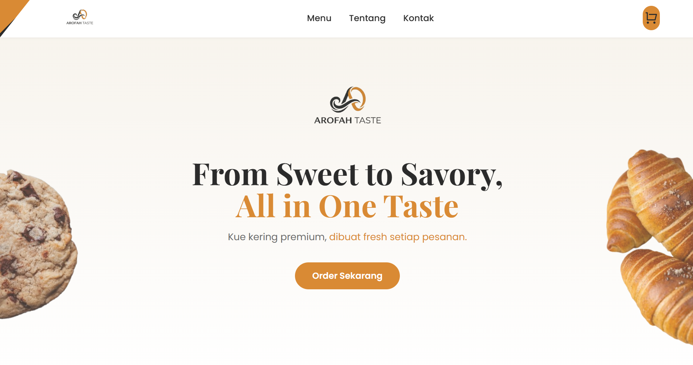
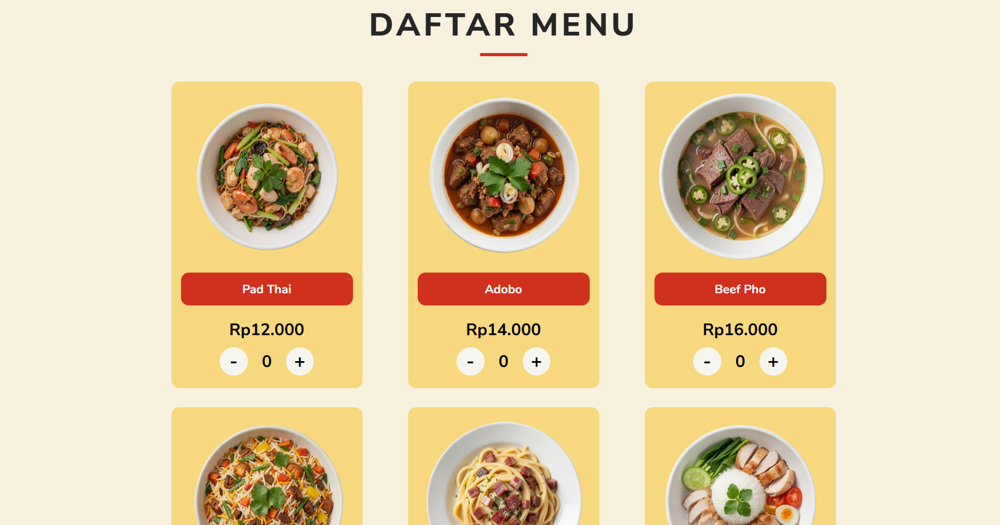
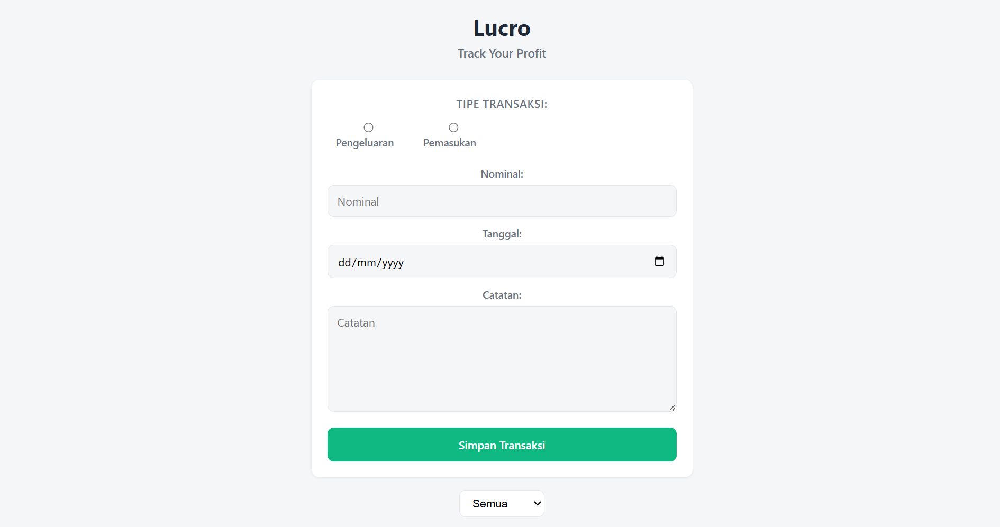
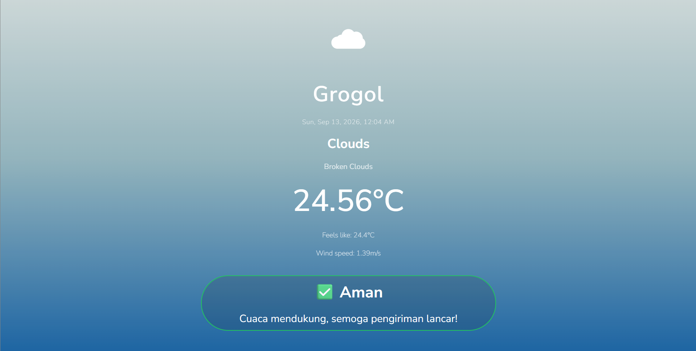

Skills
- HTML
- CSS
- JavaScript
- Git
- GitHub
Web developer for businesses - create WA order systems, profit tracking, even landing pages that make your business look professional.
View Projects Let's Talk
I'm a self-taught full-stack developer with years of experience in the culinary industry before switching careers to software development. So far I've built 5 projects from scratch, from order systems to profit trackers, mostly for small food & beverage businesses. I'm still learning (currently deepening my backend skills), but everything on this page is real, working, and built by me.
After years of long shifts as a cook, I started looking for something that could give me better income and more control over how I live.
I started seriously learning to code in early 2025, through online courses, YouTube, and documentation. I began with installing tools and writing HTML from scratch, eventually working my way toward writing clean, effective code.
Now, I take on projects that help me better understand front-end development and how I build things people actually use — mainly for small businesses.
I'm a former cook turned self-taught full-stack developer, with hands-on experience in the culinary business. Now I dive into the business world and love building solutions through code
Building tailormade, scalable business tools, and software from scratch using vanilla JavaScript and local storage.
Build landing pages for businesses credibility
Integrating third-party APIs securely, using serverless functions to protect sensitive keys.
Turning graphic wireframes into responsive, accessible frontend code using CSS Grid/Flexbox and basic JavaScript.
Welcome to my portfolio!

Classic problem: your business isn't visible or doesn't look professional? Imagine having your own business website.

Rather than having your dear customers DM you just to ask about your menu, I suggest you have your own WhatsApp order system.

If you don't want to use pen and paper, or even Excel to track your profit, let me introduce a profit tracker app for you.

The weather can turn from friend to foe. A weather app that offers delivery-specific advice could help your decision!
If you would like to get in touch, please fill out the form below: